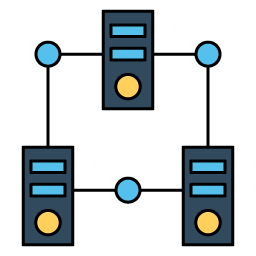
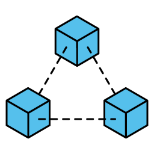
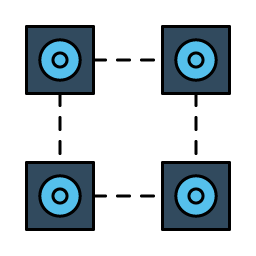

블록체인이 뭔데요?
▶ 블록체인은 데이터 분산 처리 기술 !
블록체인 네트워크에 참여하는 모든 사용자가 모든 거래 내역 등의 데이터를 분산 및 저장, 즉 체인 형태로 묶여있기 때문에 ‘블록체인’이라는 이름이 붙었습니다.
기존 거래와 블록체인간의 차이점은 무엇인가요?
(출처: SW 중심사회)
블록체인의 특징은 무엇인가요?
▶ 분산저장!
①데이터 위변조 방지
기존 거래 방식에서 데이터를 위변조하기 위해서는 은행의 중앙서버를 공격하면 가능했습니다. 그러나 블록체인은 여러 명이 데이터를 저장하기 때문에 위변조가 어렵습니다. 블록체인 네트워크를 위변조하기 위해서는 참여자의 거래 데이터를 모두 공격해야 하기 때문에 사실상 해킹은 불가능하다고 여겨집니다.

②탈중앙화
블록체인은 중앙 관리자가 필요 없다는 점도 특징으로 꼽힙니다. 은행이나 정부 등 중앙기관이나 중앙 관리자가 필요했던 것은 공식적인 증명, 등기, 인증 등이 필요했기 때문이죠. 그러나
블록체인은 다수가 데이터를 저장, 증명하기 때문에 중앙관리자가 존재하지 않게 됩니다.
중앙기관의 역할을 필요로 하지 않는 블록체인의 이러한 특징 덕분에, ‘중앙은행’이 없이도 화폐 발행이 가능하게 됩니다. 비트코인을 원하는 사람들이 직접 ‘채굴’을 통해 ‘발행’할
수 있죠. 우리 손으로 화폐의 발행과 유통을 가능케 할 수 있는 것입니다.
+) 현재로서는 블록체인 기반 가상화폐의 화폐가치가 변동성이 매우 크고 투기성이 지적되는 등 부정적인 측면이 완전히 해결되지 않았기 때문에, 중앙기관과 은행을 대체하기는 어려워 보입니다. 하지만 블록체인이 가진 높은 신뢰성과 보안성은 안전한 네트워크를 필요로 하는 산업 전반에 확산될 것으로 보입니다.
(출처: banksalad)